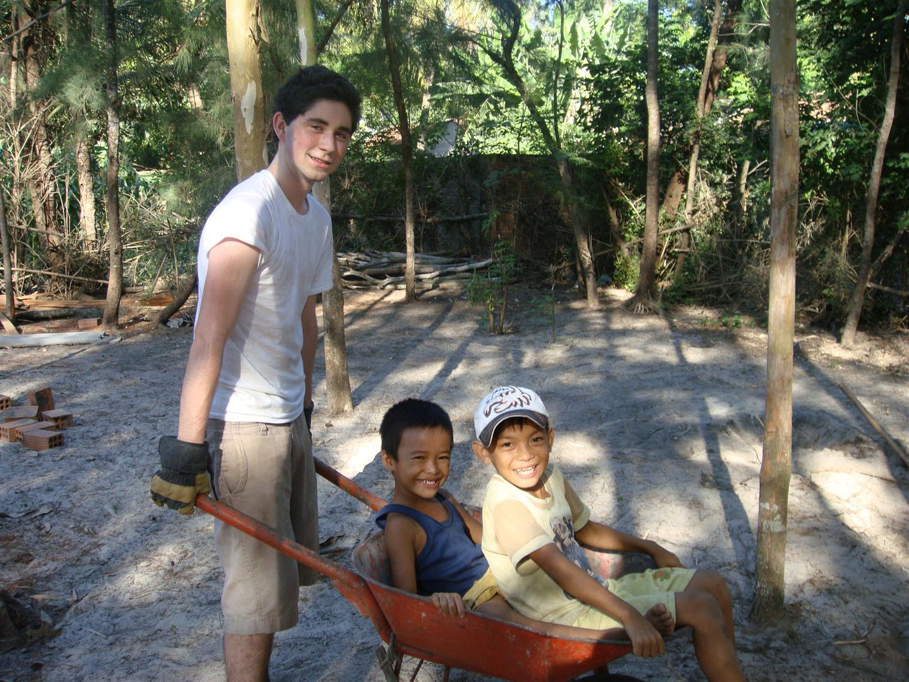
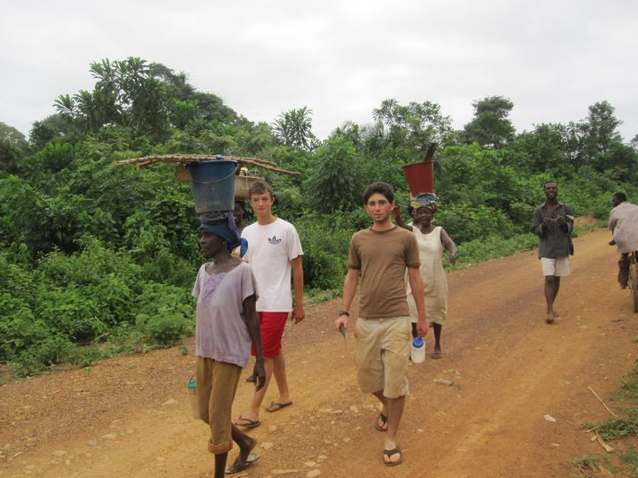

I was born on October 15th 1992 in Los Angeles, CA to parents Patty Clark and Gary Tieche. In 1st grade, my parents took me to Paris for the first time, and from then on I've been addicted to traveling. After sophomore year of high school I was fortunate enough to be able to spend my summer in Vietnam. There, I worked along side with Vietnamese to build "Compassion Houses" from the ground up.
The next summer I once again went abroad, this time to Ghana. There I learned West African dance, worked on a library, taught at the local school, and even killed a goat!
What I love about traveling is all the new people you meet and experiences you have. Every new sight, smell, or taste leaves an imprint on me, that I carry with me everywhere I go. Next year I'm hoping to study abroad in Vietnam and truly immerse myself in the culture.